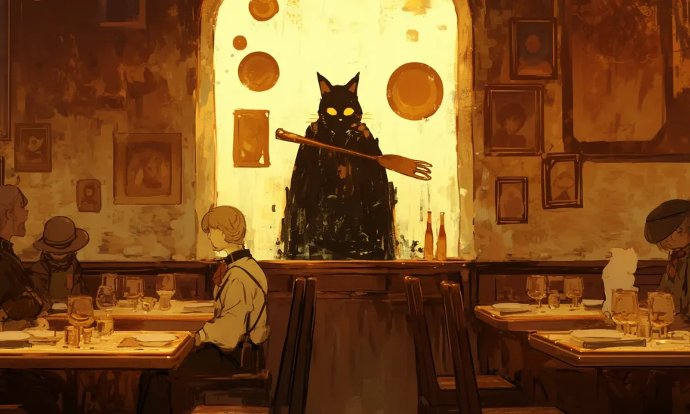

宮沢賢治
石コ賢さん
石コ賢さん
石コとあだ名がつくほど石が大好きで、鉱物などの研究もしていた。
夜空をかける汽車
銀河鉄道の夜の天の川を駆ける汽車をイメージ。


[人物プロフィール]
生没年
1896年～1933年
時代
明治時代
身分
作家・芸術家
彼はベジタリアンで、動物を大事にしてたんだ。
宮沢賢治ってどんなひと？
日本の詩人・作家で、代表作に「銀河鉄道の夜」や「注文の多い料理店」があります。農業指導者としても活動し、自然や人々との交流を重視しました。彼の作品は、ファンタジー要素と深い哲学を含み、多くの子供たちに愛されています。
コラム
（カード右上）世界がぜんたい幸福にならないうちは個人の幸福はあり得ない。
カードの効果解説！
銀河鉄道の夜
「銀河鉄道の夜」は、宮沢賢治が書いた幻想的な物語。物語の中で主人公のジョバンニと友人のカムパネルラが、星々の間を走る銀河鉄道に乗って冒険することになるが…最後に。実は、宮沢賢治自身も宇宙や星に興味を持っており、この物語にその夢を込めたらしいです。
注文の多い料理店
「注文の多い料理店」は、宮沢賢治が書いた短編小説。二人の紳士が不思議なレストランに迷い込み、奇妙な体験をして…。賢治の独特な世界観が魅力の作品です。ちなみに、多分学校の国語の授業で勉強する人はこの作品で学ぶことが多いんじゃないかな。
クイズ！：宮沢賢治の有名な童話「銀河鉄道の夜」で、主人公の名前はなんでしょう？